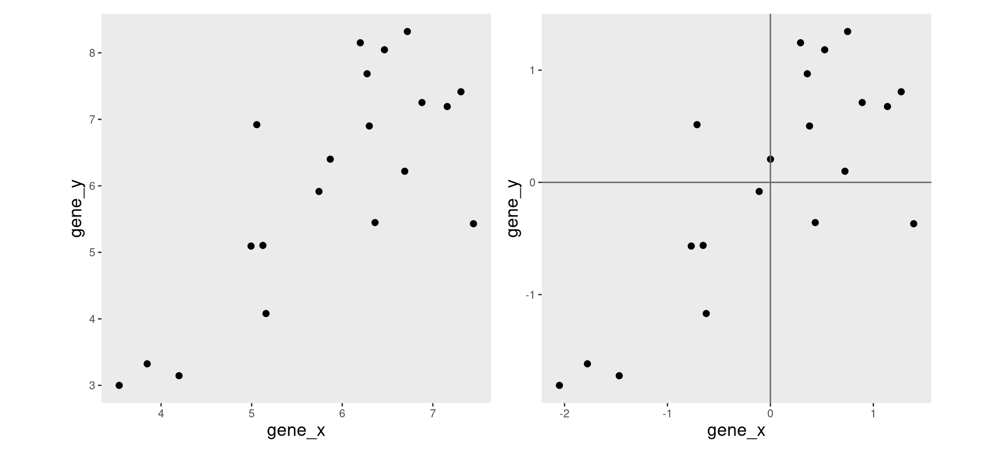
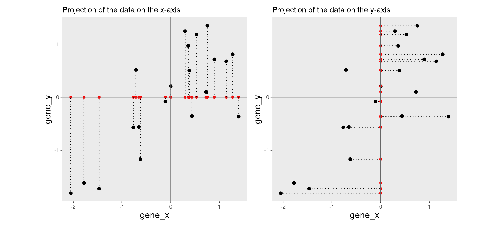
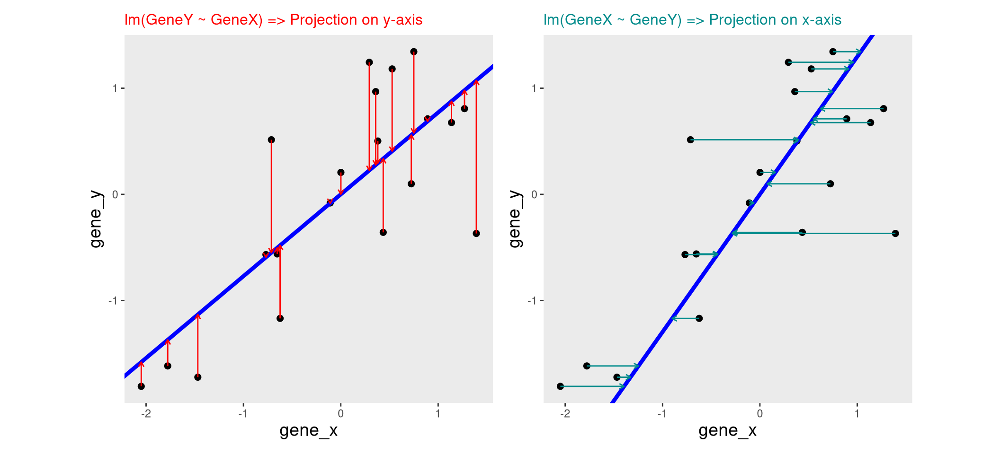
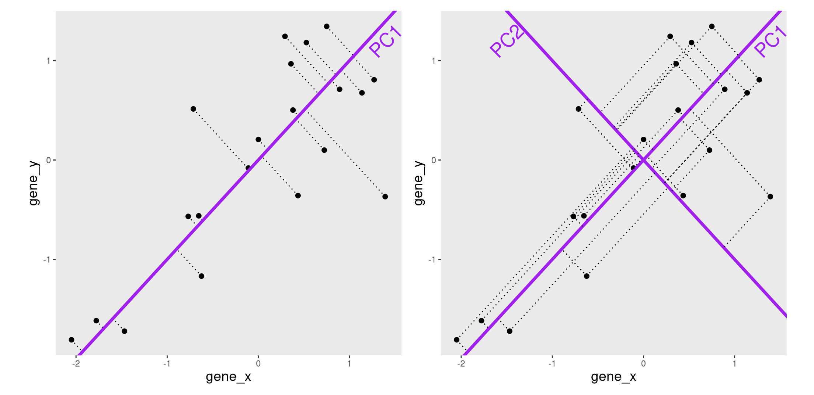
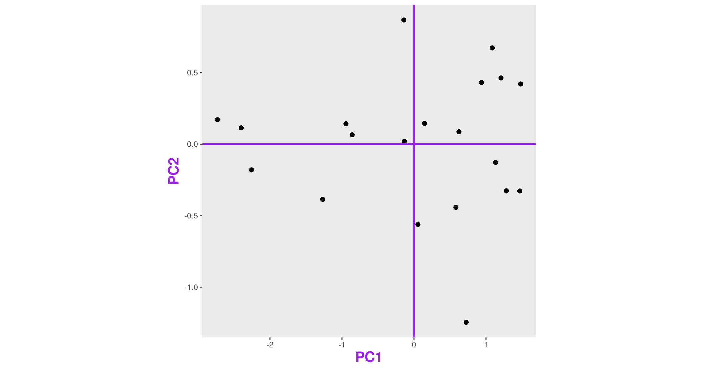
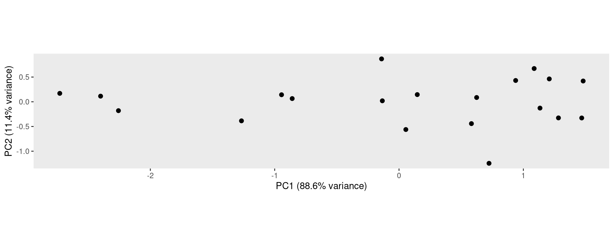
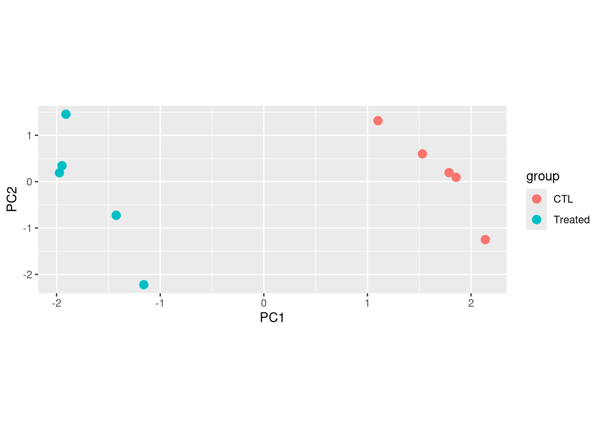
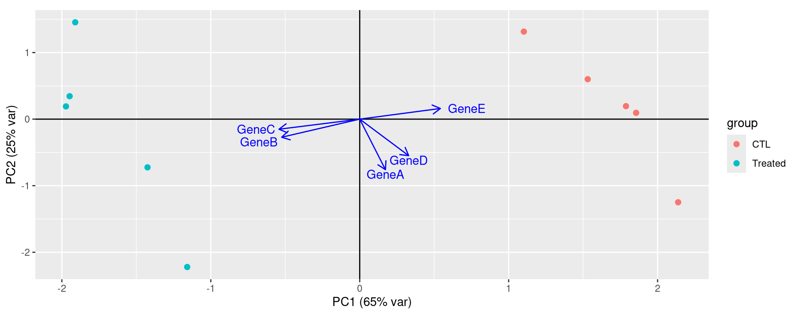

Chapter 5 Principle component analyses
Objectives
- Understand why we use principle component analyses.
- Get an intuition for how it works.
- What can PCA reveal from RNA-seq data?
5.1 Introduction to PCA
Principal Component Analysis (PCA) is a dimensionality reduction method, whose aim is to transform a high-dimensional data into data of lesser dimensions while minimising the loss of information.
We are going to use a small dataset to illustrate some important concepts related to PCA. This dataset represents the measurement of genes x and y in 20 samples. We will be using the scaled and centered version of this dataset, to place the 2 genes on the same scale.

Figure 5.1: Raw (left) and scale/centred (right) expression data for genes x and y in 20 samples
5.1.1 Lower-dimensional projections
The goal of dimensionality reduction is to reduce the number of dimensions in a way that the new data remains useful. One way to reduce a 2-dimensional data is by projecting the data onto a line. Below, we project our data on the x and y axes. These are called linear projections.

In general, and in particular in the projections above, we lose information when reducing the number of dimensions (above, from 2 (plane) to 1 (line)). In the first example above (left), we lose all the measurements of gene y. In the second example (right), we lose all the measurements of gene x.
The goal of dimensionality reduction is to limit this loss.
Instead of projecting the points on the x or the y axis, we could
think about a linear regression. We could use a linera model and the
lm() function to predict the value of gene_y, based on the
expression on gene_x, or to predict the value of gene_x, based on the
expression on gene_y.
But the relationship differs depending on the gene we choose to be the predictor or the response. Regression of y onto x (left) minimisises the sums of squares of vertical residuals (red). Regression of x onto y (right) minimisises the sums of squares of horizontal residuals (green).

Another option would be to put both genes on equal footing and find the axis that best fits the cloud of points in all directions. This line would be the axis that minimises distances in both directions, minimising the sum of squares of the orthogonal projections.
By definition, this line is also the one that maximises the variance of the projections, and hence the one that captures the maximum of variability. This line is called first principal component (PC1).
The second principal component (PC2) is then chosen to be orthogonal to the first one. In this case, there is only one possibility.

After rotating the plot such that PC1 becomes the horizontal axis, we obtain the PCA plot:

In this example the variance along the PCs are 1.77 and 0.23 respectively. The first one explains 88.6% of that variance, and the second one merely 11.4%.
To account for these differences in variation along the different PCs, it is better to represent a PCA plot as a rectangle, using an aspect ratio that is illustrative of the respective variances.

5.2 Starting from a (slightly) higher number of dimensions
Let’s know use another toy dataset, a small table called
tiny_dataset that gives the expression values of 5 genes in two
groups of cells (control and treated cells). Since we have the
expression values of 5 genes (5 dimensions), we cannot represent them
on a single plot.
tiny_dataset <- structure(list(
GeneA = c(30, 30, 31, 30, 30, 31, 30, 29, 30, 30),
GeneB = c(6, 5, 5, 5, 4, 1179, 1050, 803, 1070, 953),
GeneC = c(75, 79, 75, 76, 77, 983, 1008, 1002, 989, 1013),
GeneD = c(504, 497, 509, 509, 508, 507, 506, 499, 497, 496),
GeneE = c(797, 799, 794, 811, 806, 49, 50, 50, 51, 50)),
class = "data.frame",
row.names = c("CTL_1", "CTL_2", "CTL_3", "CTL_4", "CTL_5", "Treated_1",
"Treated_2", "Treated_3", "Treated_4", "Treated_5"))## GeneA GeneB GeneC GeneD GeneE
## CTL_1 30 6 75 504 797
## CTL_2 30 5 79 497 799
## CTL_3 31 5 75 509 794
## CTL_4 30 5 76 509 811
## CTL_5 30 4 77 508 806
## Treated_1 31 1179 983 507 49
## Treated_2 30 1050 1008 506 50
## Treated_3 29 803 1002 499 50
## Treated_4 30 1070 989 497 51
## Treated_5 30 953 1013 496 50This table is not too big, so by quickly inspecting it by eye, we can see that the treatment seems to have a strong impact on the expression of GeneB, GeneC, and GeneE but has little or no effect on genes GeneA and GeneD.
Note that here, the samples are along the rows and the genes along the
columns, as opposed to the representation in a SummarizedExperiment.
Question
What do you think a PCA based on this small dataset should look like?
Solution
We will see exactly how the PCA will look later.Now let’s use the prcomp() function to do a PCA on this dataset.
The output of prcomp() is an object of class prcomp containing 5
values. They are documented in the functions’ manual page and we will
discuss them in the next sections.
## List of 5
## $ sdev : num [1:5] 1.8097 1.1269 0.6684 0.0903 0.012
## $ rotation: num [1:5, 1:5] 0.173 -0.524 -0.542 0.329 0.542 ...
## ..- attr(*, "dimnames")=List of 2
## .. ..$ : chr [1:5] "GeneA" "GeneB" "GeneC" "GeneD" ...
## .. ..$ : chr [1:5] "PC1" "PC2" "PC3" "PC4" ...
## $ center : Named num [1:5] 30.1 508 537.7 503.2 425.7
## ..- attr(*, "names")= chr [1:5] "GeneA" "GeneB" "GeneC" "GeneD" ...
## $ scale : Named num [1:5] 0.568 538.511 486.328 5.371 396.05
## ..- attr(*, "names")= chr [1:5] "GeneA" "GeneB" "GeneC" "GeneD" ...
## $ x : num [1:10, 1:5] 1.53 1.1 2.14 1.86 1.79 ...
## ..- attr(*, "dimnames")=List of 2
## .. ..$ : chr [1:10] "CTL_1" "CTL_2" "CTL_3" "CTL_4" ...
## .. ..$ : chr [1:5] "PC1" "PC2" "PC3" "PC4" ...
## - attr(*, "class")= chr "prcomp"5.2.1 Variance explained by each component
A summary of prcomp output shows that
- PC1 was able to capture about 65 % of the total variability in the data,
- PC2 was able to capture about 25 % of the total variability in the data.
- Together, PC1 and PC2 retained 90.9 % of the total variability in the data.
## Importance of components:
## PC1 PC2 PC3 PC4 PC5
## Standard deviation 1.810 1.127 0.66843 0.09027 0.01202
## Proportion of Variance 0.655 0.254 0.08936 0.00163 0.00003
## Cumulative Proportion 0.655 0.909 0.99834 0.99997 1.00000These are computed using the object’s sdev element, containing the
standard deviations along the PCs.
5.2.2 PCA’s coordinates
The x element of the prcomp() output is a table that gives the
sample coordinates in the new component space.
## PC1 PC2 PC3 PC4 PC5
## CTL_1 1.530853 0.5998082 0.03211405 -0.04333816 0.012017799
## CTL_2 1.101755 1.3149717 1.03361796 -0.05297607 -0.001282981
## CTL_3 2.137962 -1.2491805 0.40292280 0.16960843 0.005643376
## CTL_4 1.855819 0.0948888 -0.67982286 -0.04608819 -0.011799781
## CTL_5 1.787647 0.1952147 -0.53825215 -0.04048310 -0.004765655
## Treated_1 -1.158454 -2.2218446 0.16948928 -0.05140699 0.009137305
## Treated_2 -1.424846 -0.7244170 -0.77089802 -0.03889461 -0.011127400
## Treated_3 -1.910324 1.4547787 -0.83626777 0.11348866 0.014786818
## Treated_4 -1.972497 0.1912046 0.52074789 -0.10252219 0.008786148
## Treated_5 -1.947915 0.3445754 0.66634882 0.09261222 -0.021395630These values can be used to draw the PCA plot
as_tibble(pca$x, rownames = "sample") |>
mutate(group = sub(pattern = "_.*", x = sample, replacement = '')) |>
ggplot(aes(x = PC1, y = PC2, color = group)) +
geom_point(size = 3) +
theme(aspect.ratio = .4)
The interpretation of the PCA goes as follows:
- This PCA is a representation in 2 dimensions (PC1 and PC2) of our 5-dimensions dataset.
- The new axes (PC1 and PC2) captured 90.9 % of the total variability of the data).
- This PCA plot shows that the samples cluster into two distinct groups along PC1. This separation indicates that the “CTL” and “Treated” samples have different overall expression profiles.
5.2.3 The Loadings
Principal components provide a new coordinate system. They are linear combinations of the variables that were originally measured.
PC1 in the previous example is a linear combination of the 5 genes:
\[ PC1 = c_{1}.Gene_{A} + c_{2}.Gene_{B} + c_{3}.Gene_{C} + c_{4}.Gene_{D} + c_{5}.Gene_{E}\]
The coefficients \(c_1\), \(c_2\), \(c_3\), \(c_4\), and \(c_5\), also called loadings, represent the weight of each gene in PC1.
Loadings are stored in the rotation slot of the prcomp output. Genes with the
largest absolute PC1 loadings are the ones that contribute most to that component
(GeneB, GeneC and GeneE in this case).
## PC1 PC2 PC3 PC4 PC5
## GeneA 0.1727214 -0.7592258 0.61713747 0.113206827 -0.008310904
## GeneB -0.5242436 -0.2719533 -0.04021536 -0.805844662 -0.014392984
## GeneC -0.5422152 -0.1513032 -0.12128968 0.422355853 -0.700010235
## GeneD 0.3286462 -0.5486505 -0.76868178 0.009661531 0.003041904
## GeneE 0.5415998 0.1603357 0.10927583 -0.399150076 -0.713932902Loadings can be visualised on a biplot, where the arrows show the contribution of each gene to the principal components.

This biplot shows that:
- PC1 is mostly driven by GeneB, GeneC and GeneE.
- GeneB and GeneC are pointing in the same direction, which means that they are highly correlated. They are in contrast pointing in the opposite direction to GeneE indicating an inverse correlation.
- The GeneA arrow is almost perpendicular to GeneB, GeneC and GeneE arrows, indicating that GeneA is not correlated to the 3 other genes.
- PC2 is mainly driven by GeneA and GeneD (GeneB, GeneC and GeneE only have a low contibution).
5.3 PCA on a real datasets
In real RNA-seq datasets, the data usually consists of tens of thousands of dimensions (genes), which are impossible to explore by eye. In this context, PCA is extremely useful, as it summarizes the data into a smaller number of dimensions, making it easier to explore.
We will make a PCA on our RNAseq dataset in the next chapter.
What can PCA reveal from RNA-seq data?
- Which samples are similar or distinct to each other?
- What are the main sources of variability in the data?
- Does the PCA fit to the expectation from the experimental design?
- Are there any batch effects or other technical confounders that should be included in linear model?
- Are they any outliers which may need to be explored further?
Note that PCA is an unsupervised approach - it is never told about groups (CTL and Treated in the example above). It should this not we used to identify differentially expressed genes between these groups.
If we observe a good separation of the groups of interest on the PCA, it is likely that the genes with a high loading will also be differentially expressed, but keep in mind that these are fundamentally different analyses. Conversely, even if we don’t see a good separation of our groups of interest on a PCA plot, there might still be genes that show a statistically significant expression between groups.